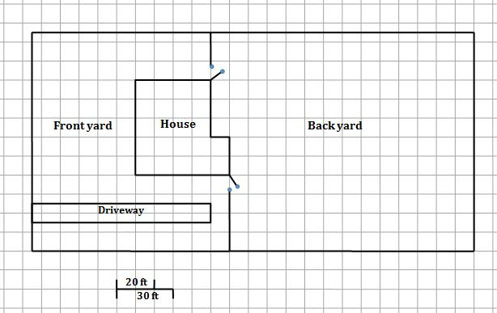
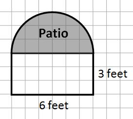

Worksheet 1.6.1 Home Improvements Worksheet
Objectives
Demonstrate operation sense by communicating in words and symbols the effects of operations on numbers. Apply the correct order of operations in evaluating expressions and formulas.
Demonstrate measurement sense by determining the sizes of objects and angles using measurements and estimation. Determine perimeter, area, surface area, and volume using appropriate units in both the U.S. and metric systems.
Evaluate formulas with multiple variables in a variety of contexts, including science, statistics, geometry, and financial math. Solve simple formulas for a specified variable.
Extract relevant information from complex scenarios. Obtain any necessary additional information from outside sources. Synthesize the information in order to solve problems and make decisions.
Problem Situation: Home Improvements
Bob and Carol Mazursky have purchased a home and they want to make some improvements to it. In the following problems, you will calculate the costs of those improvements. You will use scale drawing of the house and lot to assist you.
Review the drawing of the house and lot below.

1.
Refer to the scale on the diagram. What is the width of each box? What is the area of each box?2.
Estimate and write the dimensions of the whole lot (all of their property).3.
Use the dimensions you determined to estimate the area and perimeter of their lot.The Mazurskys are expecting their first child in several months and want to get the backyard fertilized and reseeded before little Ted or Alice comes along. They found an ad for Gerry's Green Team lawn service (see below).
| Itemized Costs: | Grass seed | $3.50 per pound. 1 pound covers 250 sq. ft. | |
| Fertilizer | $1.25 per pound. 1 pound covers 350 sq. ft. | ||
| Labor | 4 hours @ $45 per hour |
Gerry came to their house and said that the job would take about four hours and would cost about $600.
4.
Using the area of the backyard, determine how much the job should cost, based on the advertised prices. Assume you have to buy full pounds of grass seed and fertilizer.5.
Is Gerry’s estimate of $600 consistent with the prices in his advertisement?The Mazurskys want to build a chain link fence around the backyard (the fence is already shown in the diagram above). The fence would have two gates on either side of the house. They decide to do the work themselves. They need an inline post at least every 8 feet along the fence, a corner post at each corner, and a corner post on each side of the gates. The cost for the materials is shown below. The total cost will include 9.4% sales tax.
| Chain-link fence | 48-inch wide gate | Inline posts | Corner/gate posts |
|---|---|---|---|
| $7 per linear foot | $75 each | $12.50 each | $20 each |
6.
Calculate the cost of the materials required to fence in the backyard, after tax.There are four corners, plus 2 posts on each side of the two gates, for a total of 8 corner posts. 8 posts at $20 each = $160.
The top is 140 feet, and 140/8 = 17.5, so 17 inline posts will be needed. The right-hand side is 115 feet, and 115/8 = 14.375, so 14 posts will be needed. The bottom side is 130 feet, and 130/8 = 16.25, so 16 posts will be needed. The left side above the house is 25-4 = 21 feet, and 21/8 = 2.625, so 2 posts will be needed. The left side below the house is 40-4=36 feet, and 36/8 = 4.5, so 4 posts are needed. Altogether, 17+14+16+2+4 = 53 inline posts will be needed. 53 posts at $12.50 each is $662.50
The top requires 140 feet of fence, the right side 115 feet, the bottom 130 feet. The left side above the house will need 25-4 = 21 feet, and the left side below the house 40-4 = 36 feet. Altogether, 140+115+130+21+36 = 442 feet of fencing. 442 feet at $7 per foot = $3094
2 gates at $75 each = $150. The total cost is $160 + $662.50 + $3094 + $150 = $4066.50 before tax, and $4066.50 + 0.094(4066.50) = 4448.75 after tax
There is a brick grill in the backyard. Bob and Carol are going to make a concrete patio in the shape of a semicircle next to the grill. (The patio is the shaded area marked in the figure below)

The patio’s concrete slab needs to be at least 2 inches thick. They will use 40-pound bags of premixed concrete. Each 40-pound bag makes 0.30 cubic feet of concrete and costs $6.50.
7.
How much will the materials cost, including the 9.4% tax? Assume you can only buy whole bags of concrete.The radius of the patio semicircle is 3 feet. The thickness of the patio in feet is \(\frac{2}{12}\text{.}\) The volume will be
Each bag makes 0.30 cubic feet, so you will need \(\dfrac{2.36}{0.30} = 7.87\) bags. Since we can't buy a partial bag, you will need to buy 8 bags.
8 bags at $6.50 each is $52. After tax, the final cost will be $52+0.094(52) = $56.89